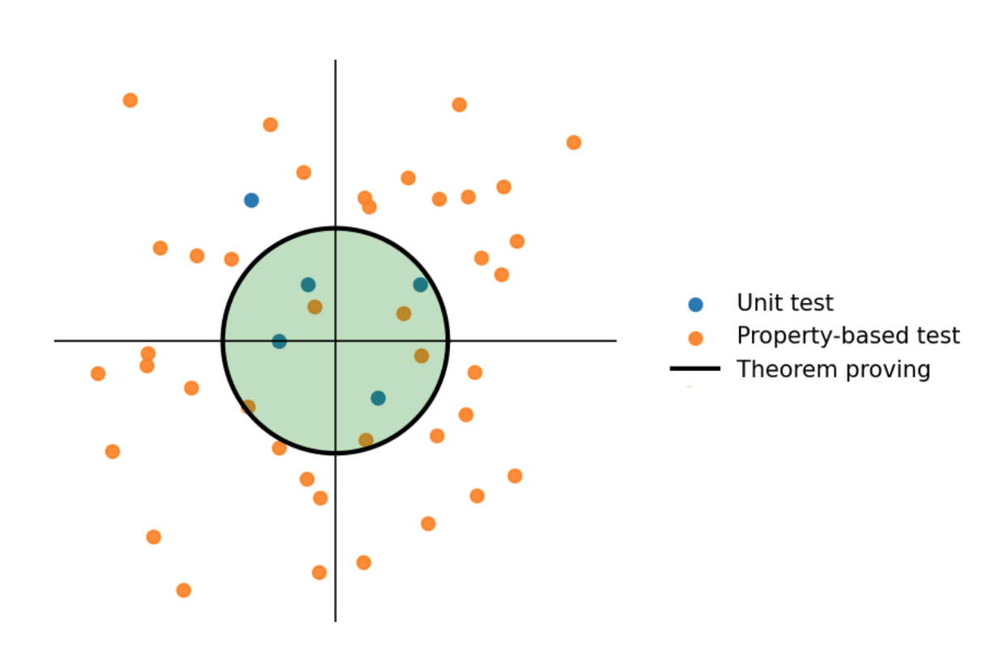

Chapter 5: Bounded Formal Verification#
Unit tests (Ch.3) and property-based tests (Ch.4) give us confidence, but they still sample the input space.
Testing can be used to show the presence of bugs, but never to show their absence. - Edsger W. Dijkstra
Our next step is bounded formal verification: We’ll:
Encode our computations and check properties.
Use a tool (Z3) to reason symbolically about all possible inputs within a bounded scope.
Explore the strengths and the limits of this technique, and see how it may complement testing.
Formal verification: Using mathematical reasoning to prove or disprove the correctness of a program with respect to a specification.
Bounded formal verification: Checking properties over a bounded set of problem sizes or input ranges.
It can provide guarantees that testing alone cannot match. But these guarantees come at a cost:
Encoding effort: we must write down precise specifications and model the program’s behavior.
Computational expense: solvers can become slow or intractable as problem size grows.
Where it shines:
On critical routines where correctness is paramount.
On core algorithms where tests may miss subtle edge cases.
When it’s practical:
When code is designed with the right abstractions, decompositions, and specifications.
Additional benefit:
The act of writing specifications and reasoning about them often exposes ambiguities, hidden assumptions, or gaps in our understanding of the problem itself.
Why “Bounded”?#
Formal methods rarely scale to arbitrarily large programs or inputs.
For instance, we might only prove properties of our heat-equation solver for small meshes (e.g., 10–100 points).
Yet this is often enough, thanks to the small-scope hypothesis (Daniel Jackson):
A high proportion of bugs can be found by checking a program for all inputs within some small scope.

Even such bounded proofs can expose subtle bugs or confirm that a property is guaranteed.
The Z3 Solver#
Z3 is a popular solver developed by Microsoft Research and is widely used in both academia and industry.
Use cases include:
Bug finding and program analysis.
Verification of software and hardware.
Compilers and optimizers.
Tool development. See visualCaseGen for an example.
Here, we use Z3 to prove properties of our heat equation solver by encoding its behavior and desired properties as logical formulas.
Workflow:
Declare symbolic variables (e.g.,
x,y,res).Encode constraints:
Preconditions
PThe effects of the
code.Desired postconditions
Q.
Ask Z3 to check
{P} [code] {Q}by searching for a counterexample:If Z3 finds one, the property does not hold.
If none exist, the property is proven.
Key advantage:
Testing samples some inputs.
Z3 reasons symbolically over all inputs within the specified bounds in one go.
Declaring Variables#
Z3 provides symbolic types: integers, reals, booleans, bit-vectors, arrays, strings, and more.
These are not ordinary variables with concrete values.
They represent all possible values of that type.
They become meaningful when we add constraints over them.
from z3 import Bool, Int, Real
p = Bool('p')
i = Int('i')
x = Real('x')
Multiple variables can be declared at once:
from z3 import Bools, Ints, Reals
p, q = Bools('p q')
i, j, k = Ints('i j k')
x, y, z, res = Reals('x y z res')
We can also create arrays programmatically using list comprehensions:
F = [Real(f'F{i}') for i in range(10)]
F[0], F[1], F[-1]
(F0, F1, F9)
Here:
The strings on the RHS are names Z3 uses internally to identify the variables.
The Python variables on the LHS are what we’ll use in our constraints and properties.
They don’t have to match, but keeping them consistent avoids confusion.
Encoding and Checking Constraints#
Once we have symbolic variables, we can express logical formulas (constraints) over them.
Constraints model:
preconditions,
program logic and computations,
postconditions.
We add constraints to a Z3
Solverinstance.We then ask the solver whether the constraints are satisfiable.
from z3 import Solver
from z3 import And, Or, Not
s = Solver()
x, y = Reals('x y')
constraints = Or([
x**2 + y**3 > 10,
x - y < -5,
x + y > 5,
2*x - y*3 > 100
])
s.add(constraints)
s.check()
s.model()
sat vs. unsat#
Satisfiable means there is at least one assignment of values to the variables that satisfies all the constraints.
Unsatisfiable means there is no assignment of values to the variables that satisfies all the constraints.
from z3 import sat, unsat
Operators#
Z3 uses standard Python arithmetic and comparison operators.
x, y = Reals('x y')
# Arithmetic
x + y
x - y
x * y
x / y
x += y
x ** y
# Comparison
x != y
x > y
x <= y
...;
For logical operations, Z3 provides special functions
from z3 import And, Or, Not, Implies, If
Similarly, for some other operations, Z3 provides special functions:
from z3 import Sqrt, Abs, Concat, SubString
But some kinds of mathematics fall outside its built-in theories:
Transcendental functions: sin, cos, tan, exp, log
(But you can approximate or axiomatize them.)
Exercise 3.1:#
Using Z3, find the root(s) of the equation:
𝑥² - 5*x + 6= 0.
s = Solver()
x = Real('x')
s.add(
# add your constraint(s) here
)
s.check()
Exercise 3.2:#
Using Z3, find the equilibrium surface temperature of a simple planet modeled by the equation:
(1 - α) S / 4 = σT⁴
Find:
T (the equilibrium temperature in Kelvin)
Given values:
α = 0.3 (the albedo, i.e., the fraction of sunlight reflected)
S = 1361 W/m² (the solar constant - incoming solar radiation)
σ = 5.67 × 10⁻⁸ W/m²K⁴ (the Stefan-Boltzmann constant)
s = Solver()
a, S, sigma, T = Reals('a S sigma T')
s.add(
# add your constraint(s) here
)
s.check()
Declarative Style#
Z3 is declarative: you express what must hold, not how to compute. That means:
You don’t assign values to variables.
You constrain them with equations, inequalities, or logical relations.
For example:
x == 0 # a Boolean formula (not an assignment)
y >= x + 1 # another Boolean formula
On their own, these Boolean formulas don’t do anything, but once added to a solver, Z3 will try to find values of x and y that make them true.
questions?
From Specs to Proofs#
Let’s revisit our simple div function:
def div(x, y):
assert y != 0 # precondition
res = x / y # code
assert res * y == x # postcondition
return res
We can’t feed this Python directly to Z3, but we can encode the same idea declaratively:
def div(res, x, y):
return [
y != 0, # precondition
res == x / y, # code
res * y == x # postcondition
]
Now, we can check:
# Create a solver:
s = Solver()
# Declare symbolic variables:
res, x, y = Reals('res x y')
# call div(res, x, y) with symbolic variables:
s.add(div(res, x, y))
# Check if the div constraints are satisfiable:
s.check()
This just tells us “there exists at least one input where it works.”
s.model()
To prove it works for all inputs, we flip the logic:
Find an assignment of variables that violate the postcondition.
from z3 import Not
def div(res, x, y):
return And(
y != 0,
res == x / y,
Not(res * y == x) # negated postcondition
)
# Create a solver:
s = Solver()
# Declare symbolic variables:
res, x, y = Reals('res x y')
# *call* div(res, x, y) with symbolic variables:
s.add(div(res, x, y))
# Check if the div constraints are satisfiable:
s.check()
Now Z3 confirms: there are no inputs (with y != 0) that break the postcondition, so the property holds universally, at least in real arithmetic.
Real vs Floating-Point#
Note that we used Reals. Real arithmetic is exact; floating-point is not. That’s why Z3 didn’t see the earlier 7/25 counterexample.
Reals are good for proving conceptual correctness and mathematical properties of algorithms.
Floating-point (
FPin Z3) lets you model IEEE-754 semantics, but is heavier and harder to reason about exhaustively.
from z3 import Float16, FP, FPVal
from z3 import fpAbs, fpIsZero
from z3 import fpIsInf, fpIsNaN, fpIsSubnormal
# choose a format
S = Float16() # or Float32(), Float64()
rtol = FPVal(1e-1, S)
def approx_equal(a, b):
# |a - b| <= rtol * |b|
return fpAbs(a-b) <= rtol * fpAbs(b)
def div(res, x, y):
return [
Not(fpIsZero(y)), # precondition
res == x / y, # code
Not(approx_equal(res * y, x)), # postcondition
]
# Create a solver:
s = Solver()
# Declare symbolic variables:
res = FP('res', S)
x = FP('x', S)
y = FP('y', S)
# call div(res, x, y) with symbolic variables:
s.add(div(res, x, y))
print(s.check())
sat
s.model()
# *** Cheat sheet for necessary FP preconditions ***
# *Prevent NaNs*
# Not(fpIsNaN(x)), Not(fpIsNaN(y)),
#
# *Prevent Infs*
# Not(fpIsInf(x)), Not(fpIsInf(y)),
#
# *Prevent overflows, underflows, subnormals* (not recommended)
# Not(fpIsInf(res * y)), Not(fpIsSubnormal(res)), Implies(fpIsZero(res), fpIsZero(x)),
Even for such simple code, this demonstrates how formal reasoning can uncover subtle edge cases that you may not have anticipated or that tests might miss.
Real or Floating-Point?#
For our purposes, reasoning in reals is preferable because:
It’s simpler and faster for Z3 to handle.
It abstracts away round-off details and lets us focus on conceptual correctness, which is something generally overshadowed by FP complications.
Floating-point issues can be handled later with testing or targeted analysis.
Note that, if a program is incorrect over the reals, it will also be incorrect in floating-point.
questions?
Back to the Heat Equation Solver#
Using this approach, we can systematically reason about our heat equation solver:
Declare symbolic variables.
Encode the solver declaratively as constraints:
Preconditions
Core Procedures
Postconditions.
Ask Z3 to prove properties by checking satisfiability of the negation of the desired properties.
Telescoping Property#
As a first step, let’s prove the telescoping property of divergence: The sum of the divergence over all cells equals the net flux through the boundaries.
\(\qquad \sum_{i=0}^{N-1} (\nabla \cdot F)_i = F_0 - F_N \qquad\)
Recall the divergence function and the telescoping property (assertions omitted for brevity):
def divergence(c_out, f, dxt):
"""Compute the divergence of face quantities (f) and store in (c_out)."""
assert len(c_out) == len(f) - 1, "Size mismatch"
assert dx > 0, "Non-positive dx"
for i in range(len(c_out)):
c_out[i] = (f[i] - f[i+1]) / dx
def telescoping(c, f, dx):
"""Check the finite volume telescoping property."""
total_divergence = sum(c) * dx
boundary_flux = f[0] - f[-1]
return total_divergence == approx(boundary_flux)
To express these functions in Z3:
We’ll define corresponding functions that operate on Z3 symbolic variables and return constraints representing their behavior.
def divergence(c_out, f, dx):
"""Compute the divergence of face quantities (f) and store in (c_out)."""
N = len(c_out)
return [c_out[i] == (f[i] - f[i+1]) / dx for i in range(N)]
def telescoping(c, f, dx):
"""Check the finite volume telescoping property."""
total_divergence = sum(c) * dx
boundary_flux = f[0] - f[-1]
return total_divergence == boundary_flux
The two main differences between the imperative and declarative versions are:
The imperative version has assignments (e.g., c[i] = …), while the declarative version uses equality constraints (e.g., c[i] == …).
The imperative version uses approximate equality (approx), while the declarative version uses exact equality (==).
Let’s now declare Z3 variables to represent the inputs and outputs of these functions:
N = 3 # number of cells
dx, dt, kappa = Reals('dx dt kappa')
f = [Real(f'f{i}') for i in range(N+1)]
c = [Real(f'c{i}') for i in range(N)]
Now we can set up a solver to check the telescoping property:
# Create a solver instance:
s = Solver()
# Preconditions:
s.add(dx > 0, dt > 0, kappa > 0) # Preconditions:physical constraints
# Code: divergence computation
s.add(divergence(c, f, dx))
# Postcondition:
s.add(Not(telescoping(c, f, dx)))
# Check satisfiability:
s.check()
The Z3 solver confirms unsat: there are no inputs that violate the telescoping property, so it holds universally for all valid inputs where N=3. Let’s attempt to increase N and see how far we can go before Z3 struggles.
def prove_telescoping(N):
# Declare symbolic variables:
dx = Real('dx')
f = [Real(f'f{i}') for i in range(N+1)]
c = [Real(f'c{i}') for i in range(N)]
# Create and configure solver:
s = Solver()
s.add(dx > 0, dt > 0, kappa > 0) # Preconditions:physical constraints
s.add(divergence(c, f, dx)) # code: divergence
s.add(Not(telescoping(c, f, dx)))# Postcondition: telescoping property
return s.check() == unsat
import time
for N in range(3,200,10):
start_time = time.time()
result = prove_telescoping(N)
elapsed_time = time.time() - start_time
print(f'N={N}, proved?={result}, time={elapsed_time}')
if elapsed_time > 2: # Stop if it takes too long
break
N=3, proved?=True, time=0.005280017852783203
N=13, proved?=True, time=0.009983062744140625
N=23, proved?=True, time=0.023489952087402344
N=33, proved?=True, time=0.05666399002075195
N=43, proved?=True, time=0.05717897415161133
N=53, proved?=True, time=0.06911897659301758
N=63, proved?=True, time=0.08230924606323242
N=73, proved?=True, time=0.10722517967224121
N=83, proved?=True, time=0.13048601150512695
N=93, proved?=True, time=0.14644503593444824
N=103, proved?=True, time=0.1917281150817871
N=113, proved?=True, time=0.22432374954223633
N=123, proved?=True, time=0.25306177139282227
N=133, proved?=True, time=0.31859803199768066
N=143, proved?=True, time=0.36832308769226074
N=153, proved?=True, time=0.4084649085998535
N=163, proved?=True, time=0.4642808437347412
N=173, proved?=True, time=0.5260672569274902
N=183, proved?=True, time=0.6145071983337402
N=193, proved?=True, time=0.6554920673370361
Core Procedures as Constraints#
Let’s re-express all of the core procedures of the heat equation solver as constraint generators: functions that take Z3 variables and return Z3 constraints representing the original procedures’ behavior.
def apply_bc(f, bc):
"""Apply BCs by overriding first and last face quantities (f)."""
return [f[0] == bc[0], f[-1] == bc[1]]
def diffusive_flux(f, c, kappa, dx):
"""Given a cell field (c), compute the diffusive flux (f)."""
N = len(c)
return [f[i] == -kappa * (c[i] - c[i-1]) / dx for i in range(1, N)]
def divergence(c, f, dx):
"""Compute the divergence of face quantities (f) and store in (c)."""
N = len(c)
return [c[i] == (f[i] - f[i+1]) / dx for i in range(N)]
def step_heat_eqn(u0, u1, divF, dt):
"""Advance cell field u by one time step using explicit Euler method."""
N = len(u0)
return [u1[i] == u0[i] + dt * divF[i] for i in range(N)]
We’ll use these declarative versions of the core computations to model the heat equation time step and prove properties about it.
Having specified these core computations declaratively, now let’s define the symbolic variables. In unit tests, we handpicked specific inputs. In property-based tests, we sampled many inputs randomly. Here, we define symbolic variables that represent all possible inputs within specified bounds.
# Define the parameters
dx, dt, kappa = Reals("dx dt kappa")
# Boundary conditions
bc = Reals("bc0 bc1")
# Define the vectors based on mesh size N
def allocate_vectors(N):
u_old = [Real(f"u_old_{i}") for i in range(N)]
u_new = [Real(f"u_new_{i}") for i in range(N)]
divF = [Real(f"divF_{i}") for i in range(N)]
F = [Real(f"F{i}") for i in range(N+1)]
return u_old, u_new, divF, F
We are now ready to state and prove more properties about our heat equation solver.
Conservation#
Recall the below encoding of the conservation property from the previous chapters:
\( \sum_i u_i^{\,\text{new}}\,\Delta x = \sum_i u_i^{\,\text{old}}\,\Delta x + \Delta t\,\bigl(bc_0 - bc_1\bigr) \)
def heat_is_conserved(u_old, u_new, dt, dx, bc):
"""Check if heat is conserved."""
lhs = sum(u_new) * dx
rhs = sum(u_old) * dx + dt * (bc[0] - bc[1])
return lhs == rhs
s = Solver()
# Allocate vectors
u_old, u_new, divF, F = allocate_vectors(N=5)
# Positive, arbitrary parameters
s.add(dx > 0, dt > 0, kappa > 0)
# Model the heat equation time step
s.add(apply_bc(F, bc))
s.add(diffusive_flux(F, u_old, kappa, dx))
s.add(divergence(divF, F, dx))
s.add(step_heat_eqn(u_old, u_new, divF, dt))
# Attempt to disprove conservation
s.add(Not(heat_is_conserved(u_old, u_new, dt, dx, bc)))
s.check()
The unsat result indicates that Z3 is unable to find any counterexample that violates the conservation property. As such, we have proven that the conservation property holds for all possible inputs (for real arithmetic and N=5).
Note
While we checked this proof for just one time step, it’s an arbitrary timestep that represents any step of the simulation.
By induction, if each step conserves heat, the entire simulation does as well. (Think, loop invariant.)
Though, this doesn’t account for truncation errors or floating-point round-off, which could accumulate over many steps in a real implementation.
Symmetry#
If the initial state is symmetric, and the boundary fluxes are equal and opposite (antisymmetric),
Then, the updated state must also be symmetric.
Let’s encode:
symmetry: \(u_{i} = u_{N-1-i}\) for all \(i <N/2\).
Antisymmetric BCs: \(F_0 = -F_{N}\).
def is_symmetric(u):
N = len(u)
return And([u[i] == u[N-1-i] for i in range(N)])
s = Solver()
# Allocate vectors
u_old, u_new, divF, F = allocate_vectors(N=5)
# Positive, arbitrary parameters
s.add(dx > 0, dt > 0, kappa > 0)
# symmetric initial condition
s.add(is_symmetric(u_old))
# Apply antisymmetric, arbitrary BCs
s.add(bc[0] == -bc[1])
# Model the heat equation time step
s.add(apply_bc(F, bc))
s.add(diffusive_flux(F, u_old, kappa, dx))
s.add(divergence(divF, F, dx))
s.add(step_heat_eqn(u_old, u_new, divF, dt))
# Attempt to disprove symmetry preservation
s.add(Not(is_symmetric(u_new)))
s.check()
The unsat result indicates that Z3 is unable to find any counterexample that violates the symmetry property. As such, we have proven that the symmetry property holds for all possible inputs (for real arithmetic and N=5).
Monotonicity#
Diffusion smooths. One way to express this intuition discretely is through monotonicity preservation: if a temperature profile is nondecreasing at the start of a step, it should remain so after the update. In other words, diffusion should not create new inversions.
def is_nondecreasing(u):
return And([u[i] <= u[i+1] for i in range(len(u)-1)])
s = Solver()
# Allocate vectors
u_old, u_new, divF, F = allocate_vectors(N=5)
# Positive, arbitrary parameters
s.add(dx > 0, dt > 0, kappa > 0)
# insulated boundaries
s.add(bc[0] == 0, bc[1] == 0)
# Model the heat equation time step
s.add(apply_bc(F, bc))
s.add(diffusive_flux(F, u_old, kappa, dx))
s.add(divergence(divF, F, dx))
s.add(step_heat_eqn(u_old, u_new, divF, dt))
# nondecreasing initial profile
s.add(is_nondecreasing(u_old))
# ask Z3 to find a counterexample that breaks monotonicity
s.add(Not(is_nondecreasing(u_new)))
s.check()
The solver returns sat, indicating that Z3 has found a counterexample that violates the monotonicity property.
s.model()
The counterexample provided by Z3 shows specific values for the parameters and initial conditions where the property fails. This insight can guide us in refining our model or understanding the limitations of the diffusion process under certain conditions:
Looking closely at the counterexample, we see that dt is quite large relative to dx and kappa, leading to instability
Try introducing the stability condition and see if that helps prove monotonicity:
dt <= dx*dx / (2*kappa)
Positivity#
We expect that, given a non-negative initial temperature distribution and non-negative boundary conditions, the temperature remains non-negative after one time step. Below is an expression of this property in Z3:
def all_positive(c):
"""All cell values are non-negative."""
N = len(c)
return And([c[i] >= 0 for i in range(N)])
s = Solver()
# Allocate vectors
u_old, u_new, divF, F = allocate_vectors(N=5)
# Positive, arbitrary parameters
s.add(dx > 0, dt > 0, kappa > 0)
s.add(dt <= dx*dx / (2*kappa)) # r <= 1/2
s.add(bc[0] >= 0, bc[1] <= 0)
# Model the heat equation time step
s.add(apply_bc(F, bc))
s.add(diffusive_flux(F, u_old, kappa, dx))
s.add(divergence(divF, F, dx))
s.add(step_heat_eqn(u_old, u_new, divF, dt))
# non-negative initial profile and BCs
s.add(all_positive(u_old))
# ask Z3 to find a counterexample that produces negative temperature
s.add(Not(all_positive(u_new)))
s.check()
What we just did#
We re-expressed the solver’s core procedures as constraint generators and used Z3 to:
Prove universal identities (telescoping, conservation).
Find counterexamples when preconditions are missing (monotonicity).
Confirm fixes by adding the right guards.
Limitations#
Scalability: Z3 can struggle with larger problem sizes or more complex properties.
Encoding effort: Writing accurate and complete specifications can be challenging.
Theoretical limits: Some properties may be undecidable or intractable to prove.
Conclusion#
Yet, despite these limitations, the benefits of using Z3 for formal verification are significant:
It uncovers subtle bugs that testing might miss.
It can provide strong guarantees about correctness within the specified bounds.
It encourages precise thinking about specifications and program behavior.
While there is no one-size-fits-all solution, having multiple tools and techniques at our disposal allows us to mix and match approaches based on the specific needs and constraints of each project.
R3Sw tutorial by Alper Altuntas (NSF NCAR). Sponsored by the BSSw Fellowship Program. © 2025.
Cite as: Alper Altuntas, Deepak Cherian, Adrianna Foster, Manish Venumuddula, and Helen Kershaw. (2025). “Rigor and Reasoning in Research Software (R3Sw) Tutorial.” Retrieved from https://www.alperaltuntas.com/R3Sw